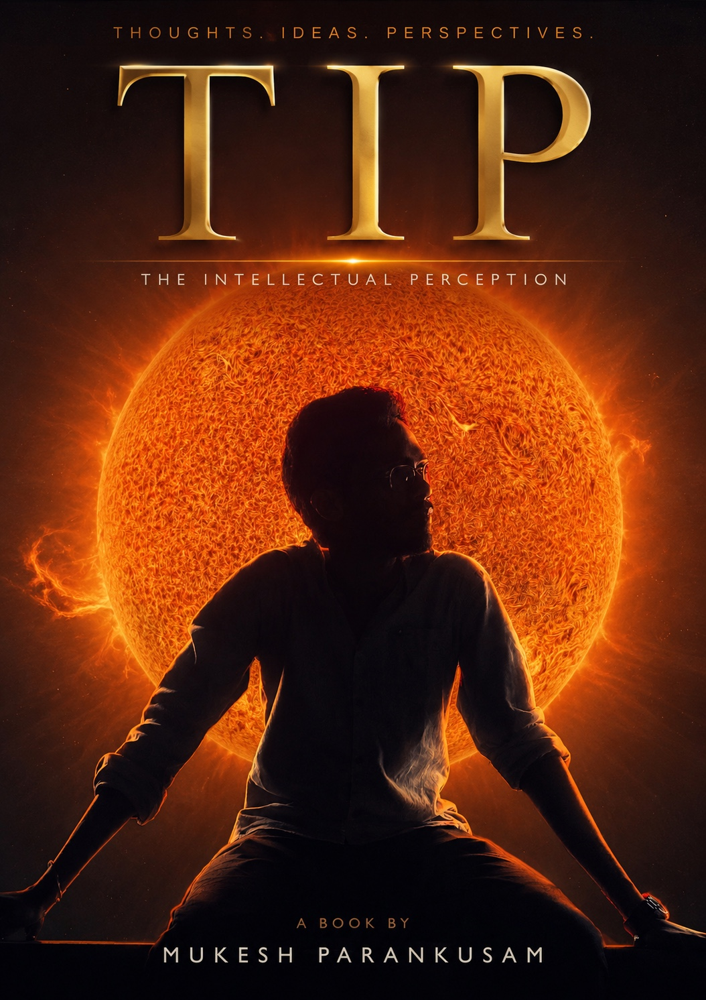
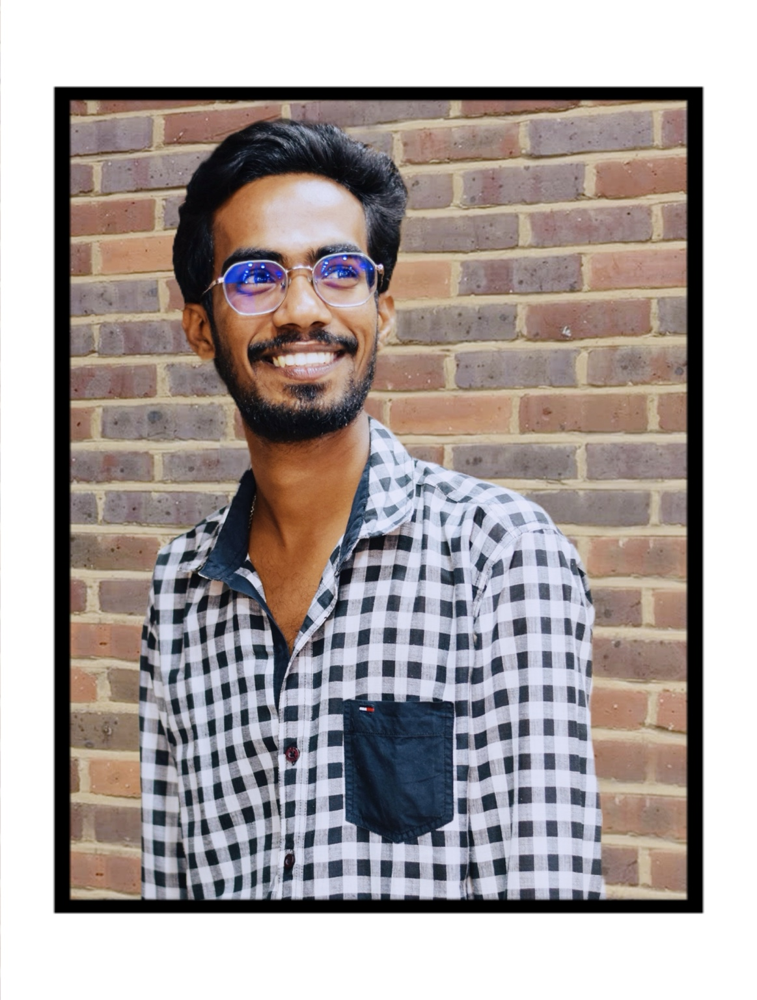
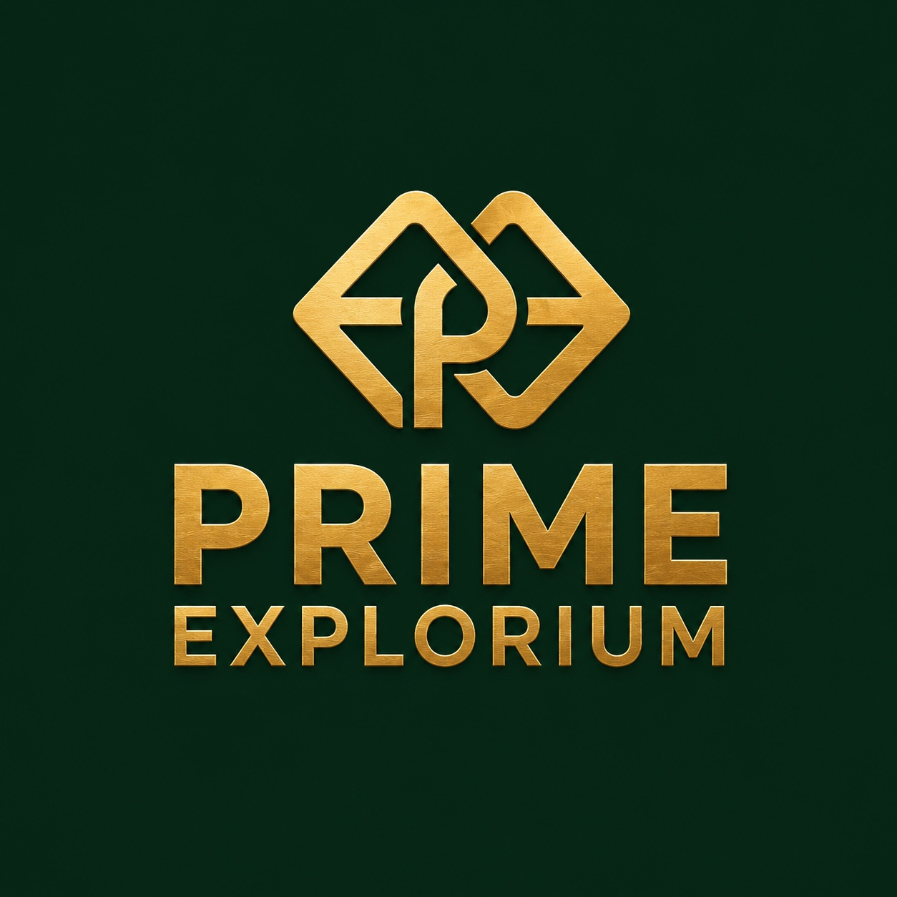
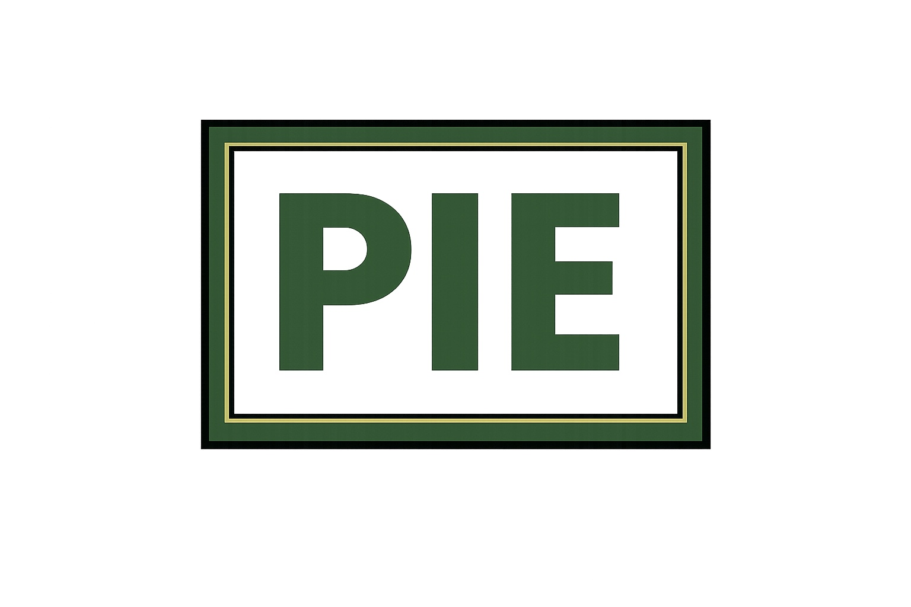
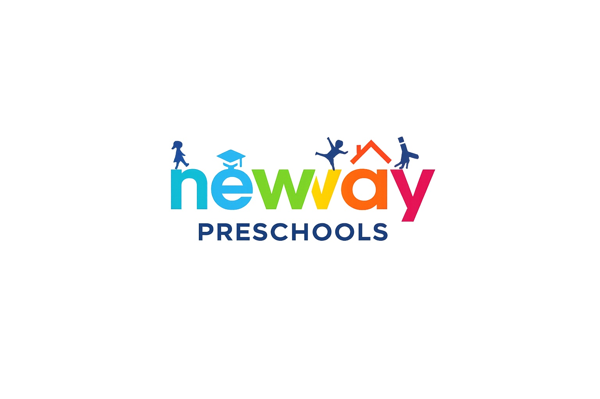
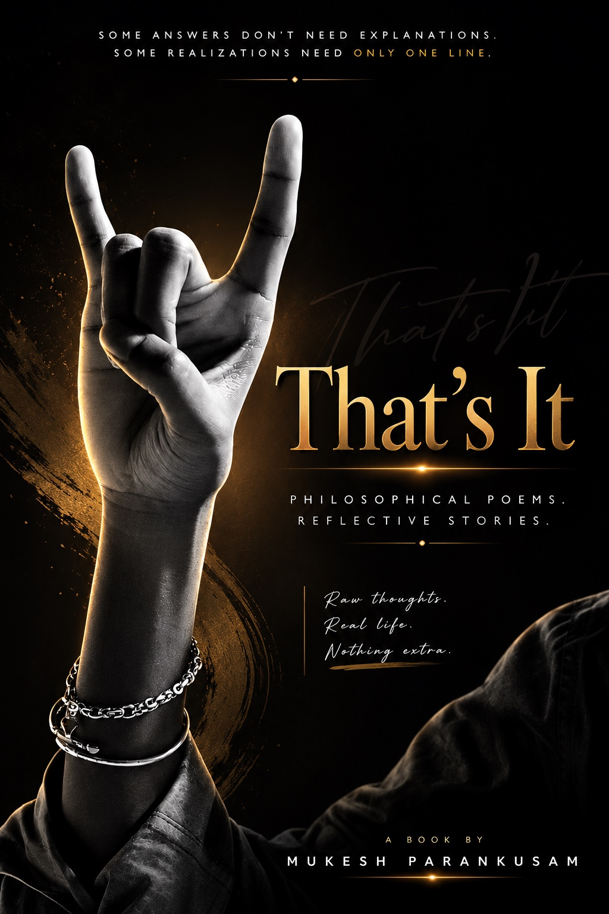
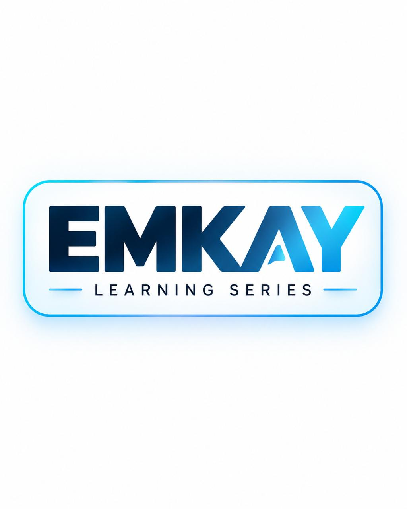

TIP
The Intellectual Perception
Philosophy · IdeasEDUCATION · LEADERSHIP · IDEAS
M.Sc (Organic Chemistry) | Ph.D Scholar
Senior Chemistry Educator
Academic Leader
Curriculum Designer | Institution Builder
Writer & Author
A LITTLE ABOUT ME

I am Mukesh Parankusam, a Chemistry educator, academic leader and institution builder. My work brings together teaching, curriculum design, educational innovation and the development of meaningful learning experiences.
I aim to make learning clear, rigorous and useful — while building institutions and resources that help students and educators grow.
THE PATH SO FAR
Building a deep understanding of science and learning.
Advanced study in Organic Chemistry.
Helping learners build confidence and conceptual clarity.
Designing structured academic content and assessments.
Developing education initiatives and learning environments.
WORK WITH PURPOSE

Chairman
An umbrella organization focused on educational initiatives, academic competitions and learning platforms.
Explore ↗
Co-founder
Academic programmes designed to support student development, strong foundations and excellence.
PIE
Director
Early childhood education centred on joyful discovery, care and meaningful learning.
Visit website ↗IDEAS IN PRINT & LEARNING

The Intellectual Perception
Philosophy · Ideas
Philosophical Book Series
A collection of 50 poemsExplore poems ↗A novel
Society · People · Perspectives
Educational learning content
Classes 6–12Visit series ↗POETRY COLLECTION
A dedicated reading space for the complete original collection of 50 poems on life, memory, love and human experience.
Read the Collection →LOOKING AHEAD
To build respected educational institutions and learning ecosystems that promote knowledge, creativity, character and leadership in students — and make quality learning more meaningful and accessible.
LET’S CONNECT